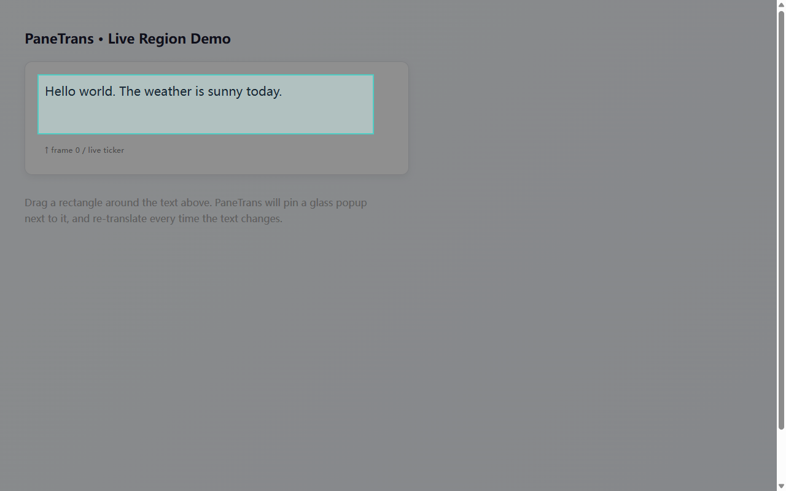
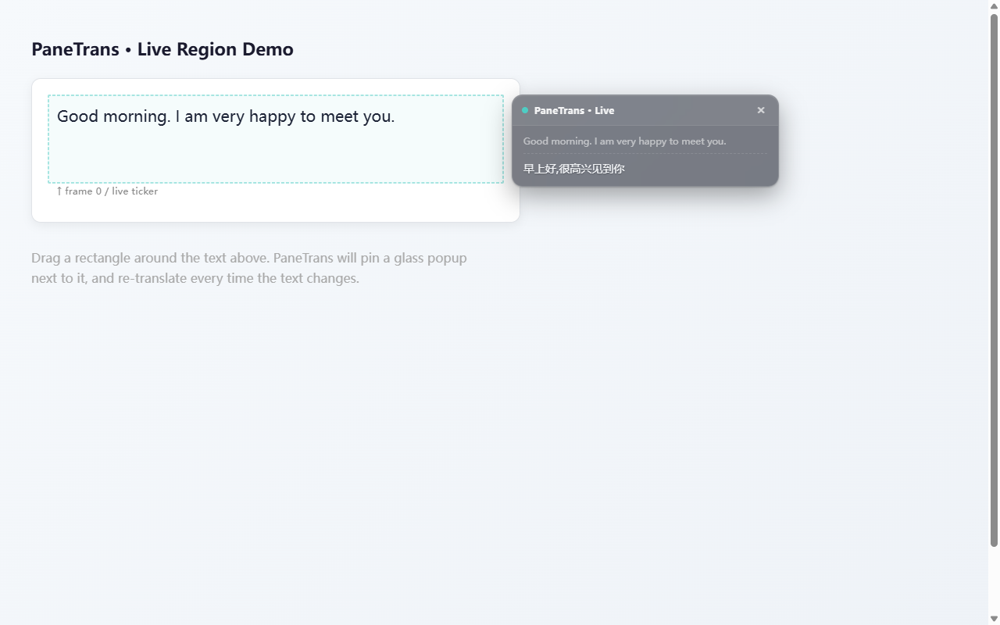
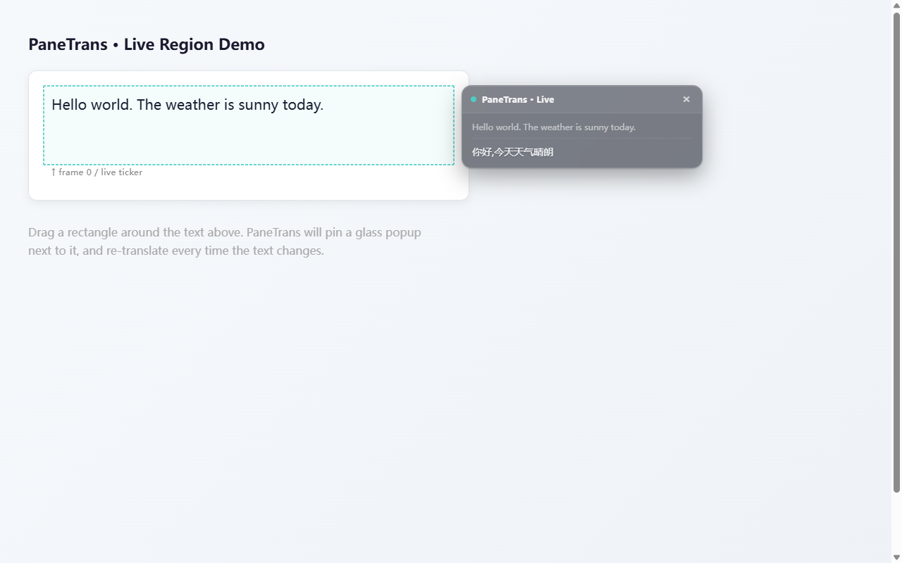

Drag, then watch.
Right-click anywhere → Translate Region → drag a rectangle. A draggable popup shows the original and the translation side-by-side.

Drag a rectangle on any web page. PaneTrans pins a glass popup with live translation that updates the moment the text changes — live chat, video subtitles, ticker text, anywhere.
All translation runs locally on your machine. No cloud. No API keys. Nothing leaves your browser.

Right-click anywhere → Translate Region → drag a rectangle. A draggable popup shows the original and the translation side-by-side.

A MutationObserver tracks the rectangle. Live chat lines,
subtitle changes, ticker updates — the popup retranslates automatically.
Like sticking a real-time subtitle strip onto any slice of the page.

Free tier: OPUS-MT (~160 MB / pair, real-time on WebGPU) and NLLB-200 / M2M-100 for higher quality. Pro tier: LLM-grade gpt-oss and Gemma 3 for the most fluent output.

src/utils/languages.js.The Free tier handles real-time translation for 10+ languages. Pro unlocks LLM-grade models for nuanced text.
Pricing